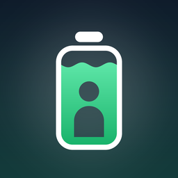
Your whole day on one energy curve - built from your Apple Watch, computed on your iPhone.
Pay once - USD 2.99. No subscription. Download on the App Store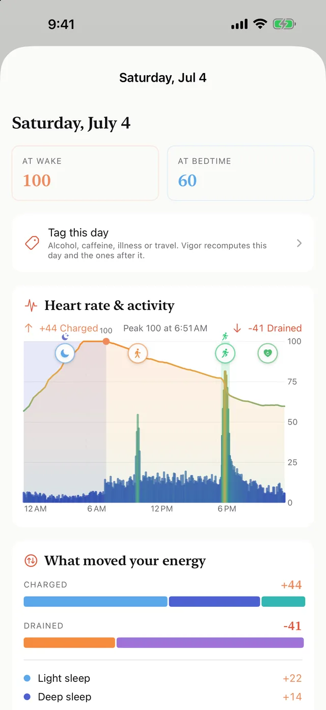
A wellness tool, not a medical device.
Vigor reads the health data your Apple Watch already records - heart rate variability, heart rate, resting heart rate, sleep and its stages, and workouts - and turns it into a single body-energy score from 0 to 100. The signature view is the day curve: your whole day drawn as one line that charges while you rest and drains while you push, with markers for sleep, workouts, and stress, so you can see at a glance whether to push hard or take it easy.
Your whole day as one line, with an activity band and tappable markers for sleep and workouts - plus an itemized log of every charge and drain.
A 0 to 100 recovery score each morning, built from your heart rate variability, sleep, and resting heart rate - with clear green, yellow, and red zones.
See what tonight's sleep gives back, get an optional evening outlook before bed, and a morning briefing when you wake.
Tag alcohol, caffeine, sickness, or travel and the model adapts - so an off day reads as an off day, not a mystery.
Sensitivity presets (gentle, balanced, responsive), your own sleep need, a morning target, and your preferred gauge style.
Modern, Kawaii, OLED, Nature - plus new Neko (a chubby cat whose pose tracks your energy), Pixel (retro 8-bit), and Silk (elegant serif). Each with light and dark palettes; try them on with live previews.
30 days of history with a morning-start trend line, plus pattern insights: sleep versus morning start, workout-day effect, your best and worst weekday.
An Apple Watch app with complications and a wrist theme picker; Home Screen, Lock Screen, and StandBy widgets including a full-day-graph widget; a share card that carries your day curve.
Invite friends and see each other's energy at a glance - opt-in, via your own iCloud. Send a friendly nudge when someone runs low; only your name and score are shared, never your health data.
All health processing happens on your device. No account, no Vigor server, no analytics - your health data never leaves your iPhone; the only thing you can choose to share is your energy score, through Circles.
Localized into 10 languages - and more to come after launch.
Every look has the same features - only the personality changes. Modern, Kawaii, OLED, Nature, Neko, Pixel, and Silk, each with light and dark palettes.
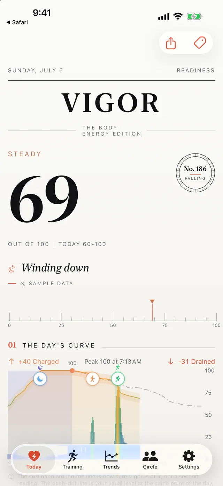
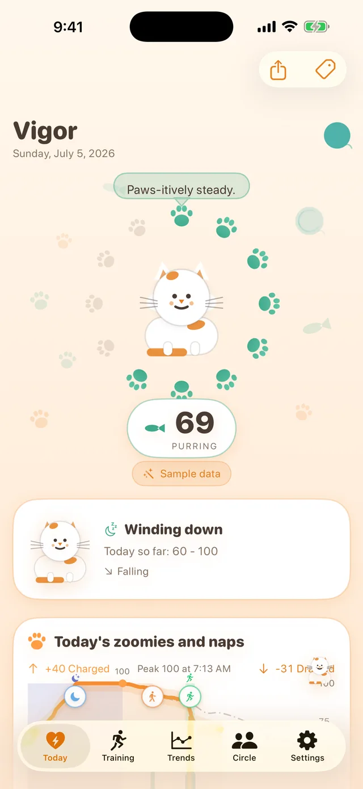
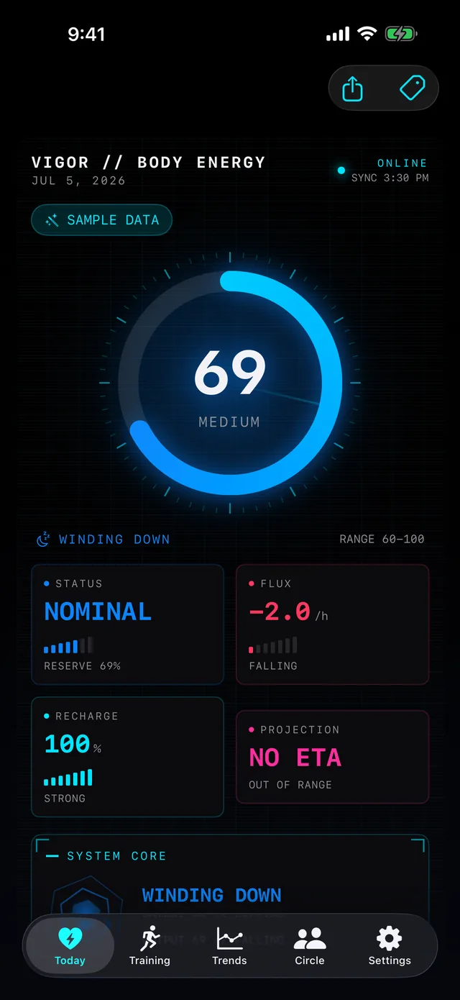
What charged and drained you, what tonight's sleep gives back, and the patterns behind your good and bad days.
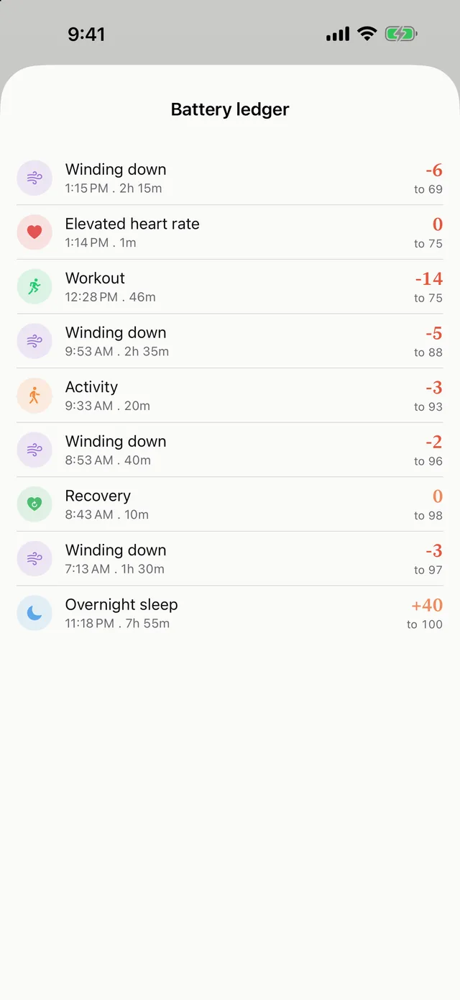
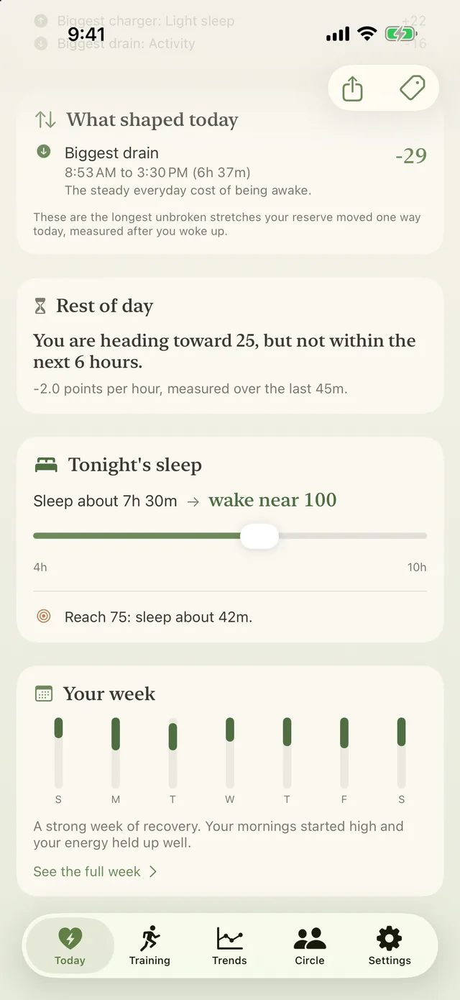
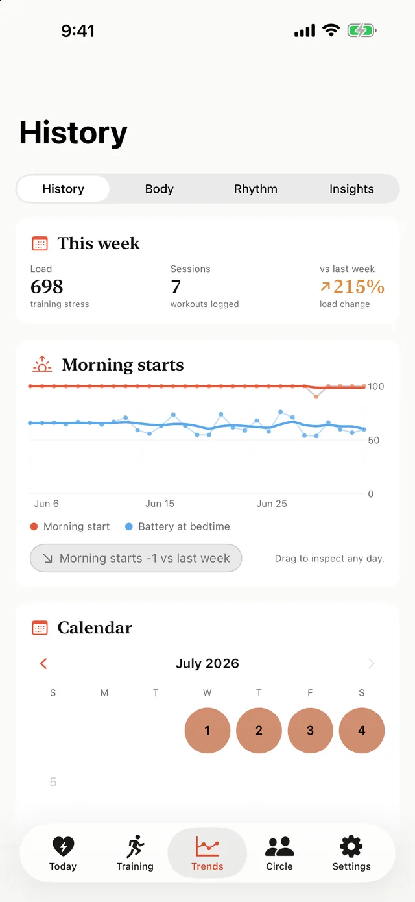
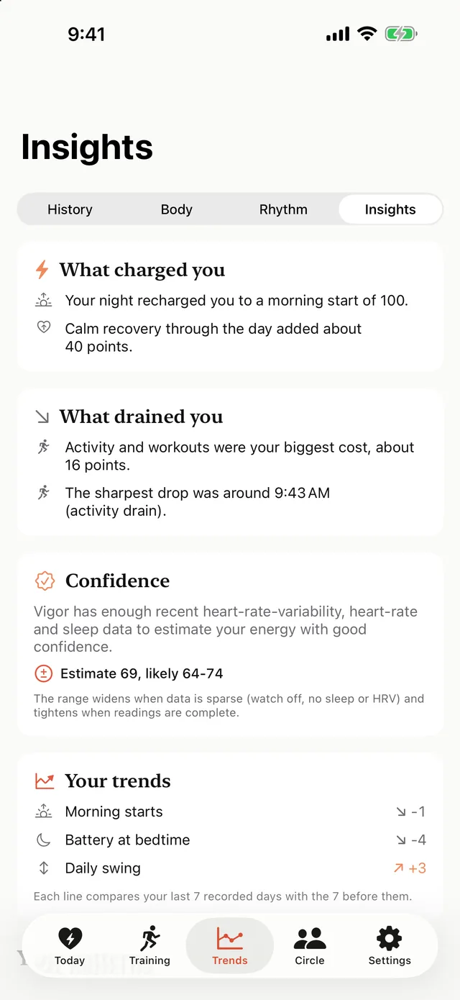
One raise of the wrist shows the score, the day's charged and drained totals, and the same energy curve as the phone - drawn over your heart-rate and activity intensity. The watch mirrors the look you chose on the phone (or pick a different one on the wrist), complications keep the number a glance away, and the Smart Stack surfaces Vigor when it matters: mornings, after workouts, when energy runs low.
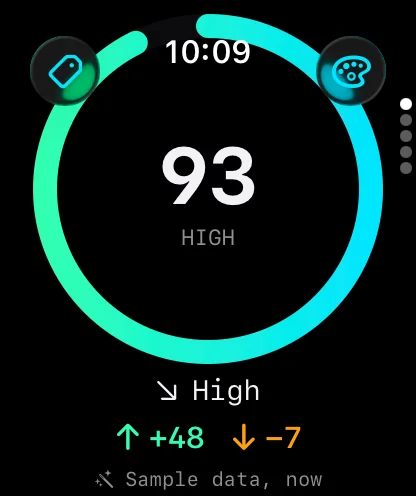
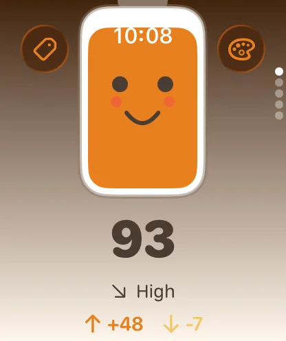
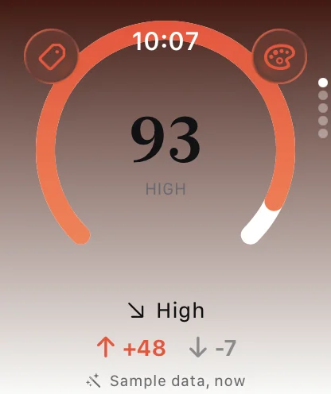
Reads your history. On first run Vigor reads about two months of your Apple Watch data to learn your personal baseline, so you get a real score right away.
Sets a morning level. Overnight it works out how well you recovered, gives you a readiness score, and starts your day's curve there.
Charges and drains through the day. Your heart rate, activity, and even naps move the number up and down. It is a running balance, like a battery for your body.
Vigor computes everything on your iPhone and your health data never leaves your device. No account, no Vigor server, no analytics. The only thing you can choose to share is your energy score with friends, through the opt-in Circles feature, via your own iCloud - the developer runs no server and cannot read it. Read the full Privacy Policy. Questions? See Support.